1. 시작하기
접속과 PIN
- 사내 포털의 개선활동 → 안전보건 통합관리를 누르면 새 창으로 열립니다.
- PIN 번호 4자리를 누르면 들어갑니다. PIN은 사람마다 다르고, 누가 접속했는지 기록됩니다.
- 휴대폰에서도 같은 주소로 쓸 수 있습니다. 홈 화면에 추가해 두면 앱처럼 열립니다.
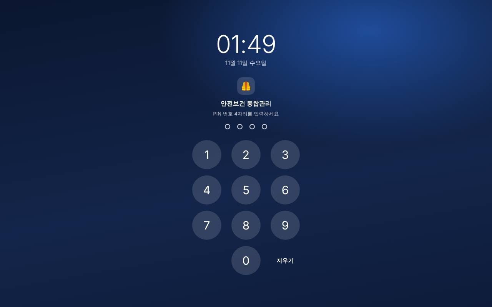
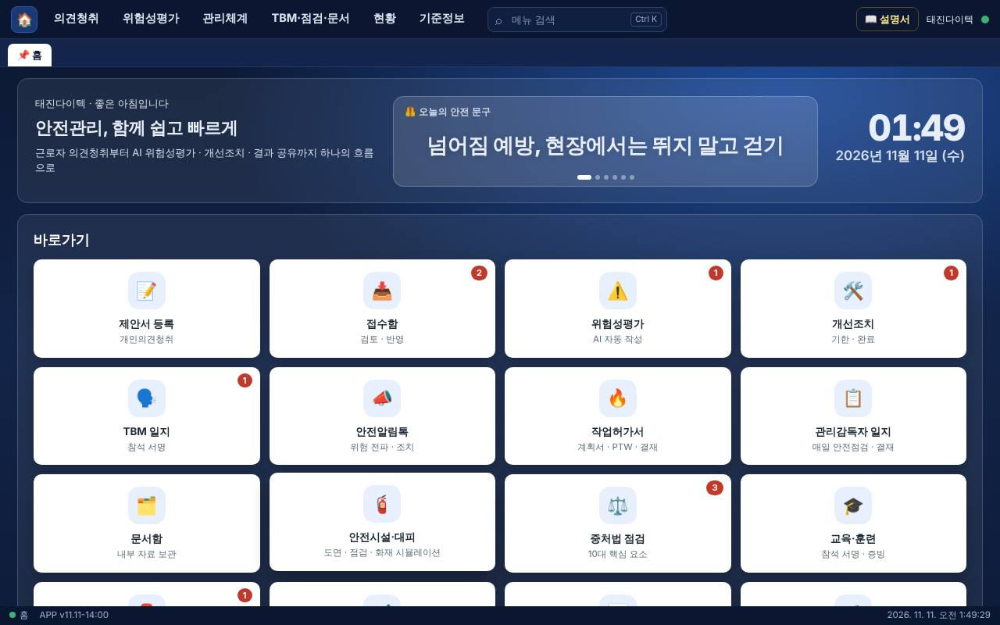
홈 화면
| 상자 | 내용 |
|---|---|
| 맨 위 | 인사말, 오늘의 안전 문구(누르면 다음 문구), 시계. |
| 즐겨찾기 | 자주 쓰는 화면을 모아 둡니다. 상단 세부 메뉴 항목 오른쪽의 ☆를 누르거나, 화면을 연 상태에서 오른쪽 위 ☆를 누르면 추가됩니다. 다시 누르면 빠집니다. 즐겨찾기는 그 PC(브라우저)에만 저장됩니다. |
| 바로가기 | 주요 화면 카드입니다. 오른쪽 위 빨간 숫자는 처리할 것이 있다는 표시입니다. (예: 접수함 2 = 미처리 제안 2건) |
| 안내 | 단축키와 탭 사용법 요약, 사용 설명서 열기. |
| 맨 아래 | 최근 접수 제안, 지연·임박 개선조치. |
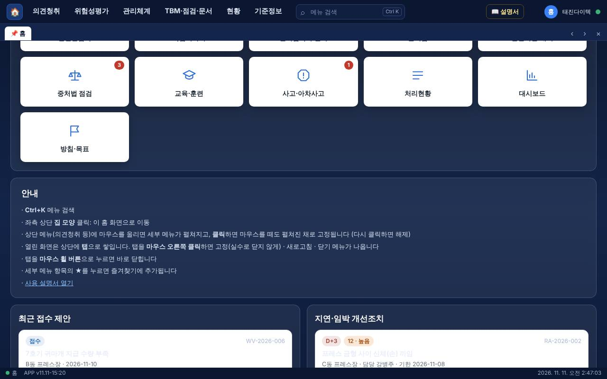
화면 구성 (PC)
| 위치 | 이름 | 쓰임 |
|---|---|---|
| 맨 위 | 상단 메뉴 | 의견청취 · 위험성평가 · 관리체계 · TBM·점검·문서 · 현황 · 기준정보. 마우스를 올리면 세부 메뉴가 펼쳐지고, 메뉴 이름을 클릭하면 펼쳐진 채로 고정됩니다(다시 클릭하면 해제). 맨 왼쪽 🏠는 홈입니다. |
| 메뉴 오른쪽 | 메뉴 검색 | Ctrl+K를 누르고 "소방", "MSDS"처럼 입력한 뒤 Enter를 치면 바로 이동합니다. |
| 메뉴 아래 | 탭 | 연 화면이 탭으로 쌓입니다. 탭을 눌러 오가고, ×나 마우스 휠 버튼으로 닫습니다. 탭은 10개까지 유지됩니다. 탭을 마우스 오른쪽 클릭하면 고정 · 새로고침 · 닫기 · 다른 탭 모두 닫기 메뉴가 나옵니다. 고정한 탭은 📌가 붙고 실수로 닫히지 않습니다. 탭 줄 오른쪽의 ‹ ›는 탭이 많을 때 좌우로 넘기고, ×는 지금 탭과 고정한 탭만 남기고 모두 닫습니다. |
| 탭 아래 | 경로 | 지금 화면 이름과 속한 메뉴를 보여 줍니다. (예: TJ 세이프 › 관리체계 › 안전시설) 화면 제목은 이 줄에만 나옵니다. |
| 오른쪽 위 | 📖 설명서 · ☆ · 이름 · 초록 점 | 📖는 이 설명서를 엽니다. ☆는 지금 화면을 즐겨찾기에 넣거나 뺍니다. 동그라미는 접속한 사람 이름의 첫 글자입니다. 점은 저장 상태입니다. 초록은 정상, 노랑은 저장 중, 빨강은 저장 실패입니다. 점을 누르면 바로 동기화합니다. |
| 맨 아래 | 상태줄 | 지금 화면 이름, 앱 버전(APP v…), 날짜와 시각. |
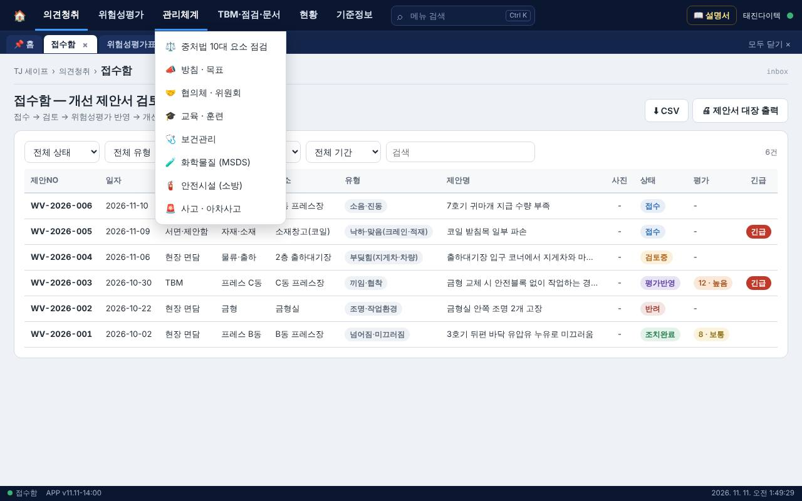
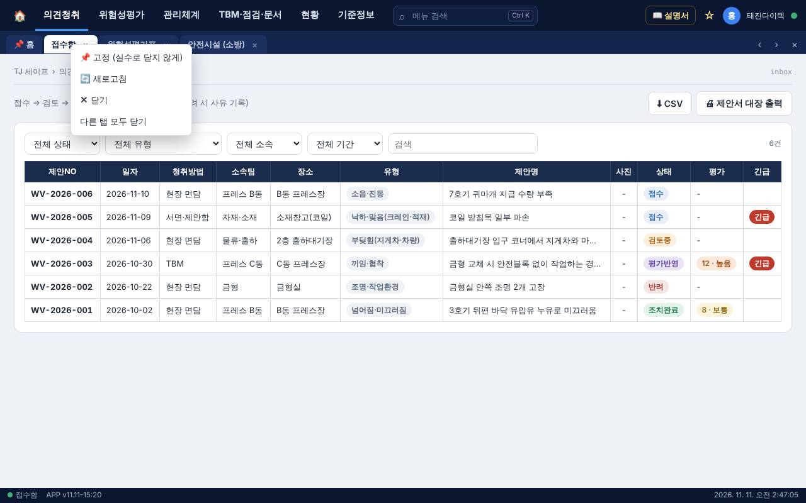
목록 화면의 표는 남색 머리글에 칸마다 테두리가 있는 모양입니다. 줄을 누르면 상세 화면이 열립니다.
휴대폰 화면
- 아래쪽 탭바에 홈 · 제안등록 · 접수함 · 위험성평가 · 전체메뉴가 있습니다.
- 전체메뉴를 누르면 모든 화면 목록이 나옵니다.
- 휴대폰에는 탭 · 즐겨찾기 · 메뉴 검색이 없습니다. 색만 PC와 같습니다.
저장 방식
- 저장 버튼을 누르면 자동으로 서버에 올라가고, 다른 PC와 휴대폰에도 같은 내용이 보입니다.
- 여러 사람이 동시에 써도 됩니다. 같은 항목을 두 사람이 고치면 나중에 저장한 내용이 남습니다.
- 파일 올리기(MSDS, 교육 스캔, 문서함, 사진 원본)는 지정된 관리자만 할 수 있습니다.
버전 확인 — 기능이 바뀌면 화면 위에 빨간 띠로 "새 버전이 있습니다"가 뜹니다. 그때는 새로고침(Ctrl+Shift+R)을 한 뒤 작업하세요. 예전 화면에서 작업하면 새 기능이 적용되지 않습니다.
2. 의견청취
근로자의 위험 제안을 받아서 검토하고, 위험성평가에 반영하고, 결과를 알리는 흐름입니다. 등록 → 접수함 검토 → 위험성평가 반영 → 개선 완료 → 게시판 공개 순서로 진행합니다.
제안서 등록 — 빠른 작성
- 의견청취 → 제안서 등록을 엽니다.
- 맨 위 「⚡ 빠른 작성」에서 📷 현장 사진 찍기를 누릅니다. 휴대폰은 카메라가 열립니다.
- 작업 장소를 고른 뒤 위험 유형 버튼(끼임·협착, 넘어짐·미끄러짐 등)을 누릅니다.
- 제안명, 개선 전 문제점, 제안 안이 자동으로 채워집니다. 실제 상황에 맞게 고칩니다.
- 소속팀을 고르고 제안서 등록을 누릅니다.
- 목록에 없는 위험은 버튼 아래 칸에 직접 적고(예: 용접 불티) 직접 입력으로 채우기를 누릅니다.
- 직접 적어 둔 칸은 자동 작성이 덮어쓰지 않습니다.
- 자동 문장은 유형별 대표 사례입니다. 사진 내용을 읽어서 쓰는 것이 아니므로 등록 전에 꼭 확인하세요.
- 종이 제안서는 「수기 제안서 원본 사진」에 촬영본을 붙여 보관합니다.
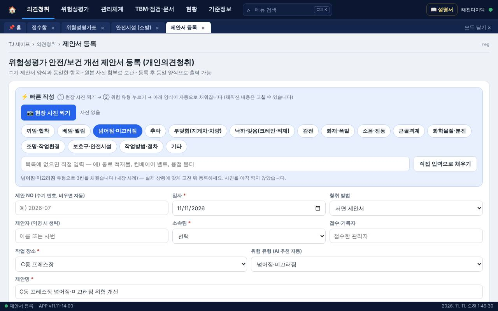
접수함
- 등록된 제안이 모입니다. 줄을 누르면 상세 화면이 열립니다.
- 상세 화면에서 검토 → 위험성평가 반영 → 조치완료(또는 반려, 사유 기록)로 상태를 바꿉니다.
- 🖨 제안서 대장 출력으로 대장을, 상세 화면에서 수기 양식 그대로 한 건씩 출력할 수 있습니다.
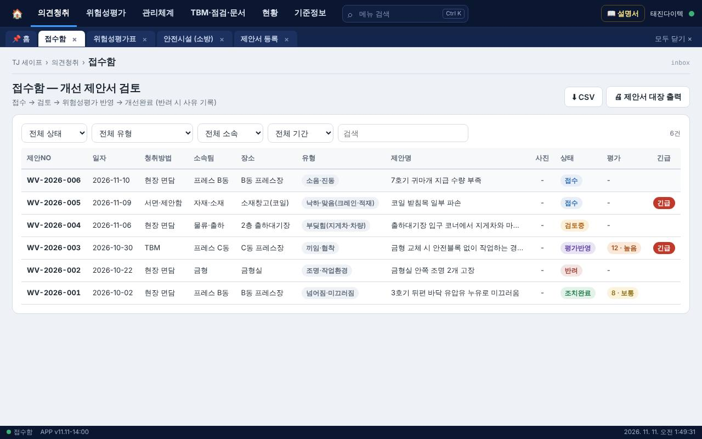
근로자용 화면과 다국어
근로자가 PIN 없이 제안만 올릴 수 있는 화면입니다. 관리 화면은 보이지 않고 의견 등록과 처리현황 두 가지만 나옵니다.
- 여는 방법: 앱 주소 끝에 ?m=w를 붙입니다. 이 주소를 QR 코드로 만들어 현장 게시판이나 휴게실에 붙여 두면 휴대폰으로 찍어서 바로 들어옵니다. 접속 기록은 남습니다.
- 언어 바꾸기: 화면 오른쪽 위 🌐 한국어 → English 버튼을 누를 때마다 한국어 → English → Tiếng Việt → 中文 → Indonesia 순서로 바뀝니다. 버튼에 다음 언어가 미리 보입니다. 고른 언어는 그 휴대폰에 기억됩니다.
- 자동 선택: 처음 열 때는 휴대폰의 언어 설정을 보고 맞는 언어로 열립니다. (베트남어 휴대폰이면 베트남어)
- 관리자 화면에서도: 사무실 PC나 태블릿의 의견청취 → 제안서 등록 화면 오른쪽 위에도 같은 🌐 버튼이 있습니다. 작업자가 그 자리에서 자기 언어로 바꿔 등록할 수 있습니다. 다른 화면으로 넘어가면 한국어로 돌아옵니다.
- 특정 언어로 바로 열리게 하려면 주소에 &lang=vi처럼 붙입니다. (en 영어 · vi 베트남어 · zh 중국어 · id 인도네시아어)
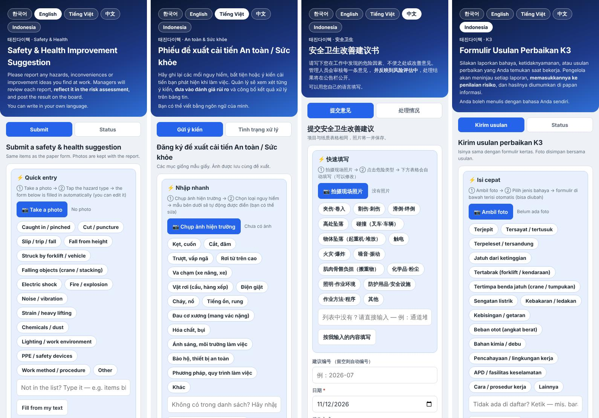
| 구분 | 내용 |
|---|---|
| 번역되는 것 | 안내문, 빠른 작성, 위험 유형 15개, 입력 칸 이름과 예시 문구, 선택 목록(청취 방법 · 기본 소속팀 · 장소), 등록 완료 안내, 오류 알림, 처리현황의 상태 이름. |
| 번역되지 않는 것 | 근로자가 직접 적은 내용, 관리자가 남긴 처리 결과, 설정에서 새로 추가한 소속팀 · 장소 이름, 유형 버튼으로 자동 작성되는 문장(관리자가 읽는 용도라 한국어로 들어갑니다). |
| 저장되는 값 | 한국어 그대로 저장됩니다. 베트남어 화면에서 「Trượt, vấp ngã」를 골라도 접수함에는 「넘어짐·미끄러짐」으로 들어옵니다. 관리자 화면과 통계는 달라지지 않습니다. |
| 근로자 입력 | 자기 나라 말로 적어도 됩니다. 관리자는 접수함에서 원문을 확인하고 필요하면 번역해서 검토합니다. |
번역문은 안전 문구라서 해당 언어를 쓰는 직원에게 한 번 읽혀 확인하는 것이 좋습니다. 어색한 표현이 있으면 고쳐 달라고 요청하세요. 다국어는 근로자용 화면에만 적용되고, 관리자 화면과 인쇄 양식은 한국어입니다.
자동 추천(AI 표시)에 대하여
- 위험 유형 추천, 빠른 작성, 위험성평가 추천값, TBM 위험 포인트, 업무일지 체크리스트는 앱 안에 들어 있는 프레스 공정 사례집으로 동작합니다.
- 외부 AI 서비스는 연결하지 않고 운영합니다. 사진과 입력 내용이 회사 밖으로 나가지 않습니다. (설정의 「AI 프록시 URL」 칸은 비워 둡니다.)
- 사진의 내용을 읽어서 문장을 써 주지는 않습니다. 추천값과 자동 문장은 초안이니 사람이 확인하고 고칩니다.
처리현황 게시판 · 안전알림톡
- 처리현황 게시판: 제안의 처리 결과를 익명으로 보여 줍니다. 게시하거나 TBM에서 전달할 때 씁니다.
- 안전알림톡: 현장 위험을 사진과 함께 그룹(라인·팀)에 알리고, 조치 후 사진을 올려 조치 전/후 이력을 남깁니다. ＋ 위험 알림으로 시작합니다.
3. 위험성평가
회사의 위험성평가 통합본(엑셀)을 앱으로 옮겨 놓았습니다. 이제 앱의 내용이 기준이고, 필요할 때 엑셀로 내려받습니다.
위험성평가표 화면
- 위험성 매트릭스: 빈도(1~5) × 강도(1~4) = 위험성(1~20). 8 이상은 개선 필요, 15 이상은 즉시 조치입니다. 칸의 숫자는 해당 건수입니다. 「전/후 전환」을 누르면 개선 전과 개선 후 분포를 바꿔 볼 수 있습니다.
- 필터: 상태 · 등급 · 부서 · 공정 · 검색어. 「검토 필요만」을 켜면 확인이 필요한 항목만 나옵니다.
- ＋ 직접 추가로 한 건씩 추가하고, 줄을 누르면 고칠 수 있습니다.
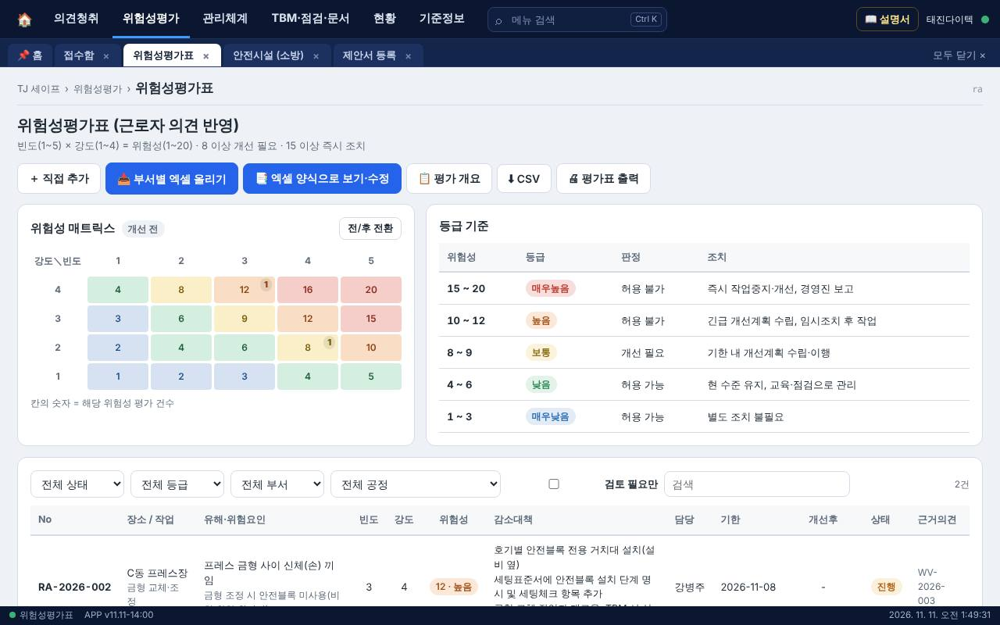
엑셀 양식으로 보기 · 수정
- 📑 엑셀 양식으로 보기·수정을 누릅니다. 통합본과 같은 시트 구성으로 열립니다.
- 위쪽 탭에서 시트를 고릅니다: 표지 · 부서별공정 정보 · 안전보건 위험정보 · 유해위험요인 파악 · 위험성평가표(공정별) · 감소대책(부서별) · 개선결과(부서별) · 위험성평가 회의.
- 고칠 칸을 눌러 바로 입력합니다. 칸을 벗어나면 저장됩니다.
- 줄 추가·삭제, 개선 전/후 사진 추가·삭제, 수정 이력 보기가 됩니다.
- 인쇄는 미리보기에서 확인한 뒤 하고, 엑셀 파일이 필요하면 ⬇ 엑셀로 내려받기를 누릅니다.
부서별 엑셀 올리기
- 각 부서가 작성한 엑셀을 📥 부서별 엑셀 올리기로 올립니다.
- 올리기 전에 미리보기가 나옵니다. 이미 있는 항목은 다시 넣지 않고, 개선 내용이 바뀐 것만 갱신합니다.
개선조치 관리
- 감소대책의 담당자 · 기한 · 진행 상태를 관리합니다. 지연되거나 기한이 임박한 조치가 위에 모여 나옵니다.
- 완료 처리할 때 조치 후 사진과 개선 후 위험성을 넣습니다.
위험성평가의 감소대책은 회사 현실에 맞게 부서가 정합니다. 앱이 자동으로 대책을 추가하지 않습니다. 「검토 필요」로 표시된 항목은 점수가 비어 있거나 부서 확인이 필요한 것입니다.
4. 화학물질 (MSDS)
MSDS는 공급업체에서 받은 원본만 씁니다. 앱은 MSDS를 만들어 내지 않습니다. 원본 파일을 올려 연결하고, 그 내용을 읽어 목록을 채울 뿐입니다.
등록하기
- 관리체계 → 화학물질 (MSDS)를 엽니다.
- 공급업체 MSDS PDF를 「MSDS 파일을 여기에 끌어다 놓으세요」에 놓습니다. 여러 개를 한꺼번에 놓아도 됩니다.
- 앱이 파일을 읽어 제품명, 구성성분(물질명 · CAS 번호), 그림문자, 신호어, 제정일 · 개정일을 채웁니다.
- ✅ 자동 입력 결과 확인에서 읽은 내용을 확인하고 틀린 곳을 고친 뒤 저장합니다.
- 저장하면 바로 다음 물질을 입력할 수 있는 빈 화면이 나옵니다.
- 같은 파일을 다시 올리면 건너뜁니다. 같은 제품의 새 개정본을 올리면 기존 항목이 새 개정본으로 바뀌고, 이전 문서는 보관됩니다.
- 글자가 아닌 스캔 그림으로 된 PDF는 읽는 데 시간이 걸리고 틀릴 수 있으니 꼭 확인하세요.
목록 보기와 출력
- 번호(CH-…)와 제품명 머리글을 누르면 정렬됩니다.
- 제품의 MSDS 원본 버튼을 누르면 공급업체 원본이 열립니다.
- 📒 관리대장: 미리보기로 확인한 뒤 인쇄합니다.
- 🖨 MSDS 원본 · 경고표지: 용기에 붙일 경고표지를 출력합니다.
개정 관리 (최신본 확인)
- 항목마다 제정일 · 개정일이 표시됩니다. 확인 주기(기본 12개월)가 지나면 「최신본 요청」 표시가 뜹니다.
- 공급업체에 확인해서 바뀐 것이 없으면 상세 화면에서 「최신본 확인함」을 눌러 날짜를 기록합니다. 개정되었으면 새 PDF를 올립니다.
- 물질명이나 CAS 번호 옆의 KOSHA 버튼을 누르면 안전보건공단 MSDS 사이트가 열립니다. 검색어는 복사되어 있으니 붙여 넣어 조회합니다.
5. 안전시설 (소방 · 대피)
관리체계 → 안전시설 (소방). 층별 배치도 위에 소화기 · 투척용 소화기 · 소화전 · 비상구 등을 표시하고 점검을 기록합니다.
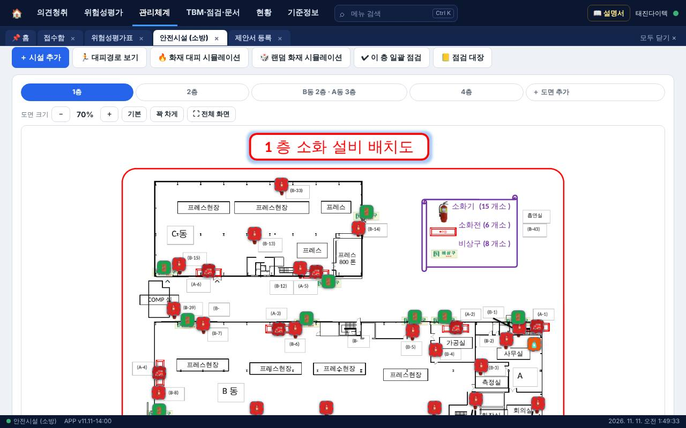
배치도 보기
- 위쪽 버튼으로 층을 고릅니다: 1층 · 2층 · B동 2층·A동 3층 · 4층.
- 도면 크기는 － ＋ 로 조절하고, 「꽉 차게」와 「전체 화면」도 쓸 수 있습니다.
- 표시 색: 빨강 소화기 · 주황 투척용 소화기 · 진빨강 소화전 · 초록 비상구.
시설 추가 · 수정 · 이동
- ＋ 시설 추가를 누르고 종류를 고른 뒤, 도면에서 놓을 자리를 누릅니다.
- 열린 화면에서 관리번호 · 위치 설명 · 설치일(제조일) · 사용기한 · 비고를 넣고 저장합니다.
- 자리를 옮기려면 표시를 눌러 📍 위치 이동을 누르고 새 자리를 누릅니다.
- 분말소화기는 설치일(제조일)만 넣고 사용기한을 비워 두면 10년 뒤 날짜가 자동으로 들어갑니다.
- 투척용 소화기는 제품에 적힌 유효기간을 직접 넣습니다.
- 비상구는 설치일 · 사용기한 칸이 없습니다.
- 사용기한이 30일 안으로 다가오면 D-day가 표시되고, 지나면 빨갛게 표시됩니다.
월 점검
- 하나씩: 표시를 눌러 양호/불량을 고르고 ✔ 점검 기록을 누릅니다. 불량이면 내용을 적습니다.
- 한 층 전체: ✔ 이 층 일괄 점검을 누르면 그 층 시설이 모두 양호로 기록됩니다. 불량인 것은 먼저 하나씩 기록하세요.
- 📒 점검 대장: 층별로 종류 · 관리번호 · 위치 · 설치일 · 사용기한 · 최근 점검일 · 결과 · 점검자가 나옵니다. 확인 후 인쇄합니다.
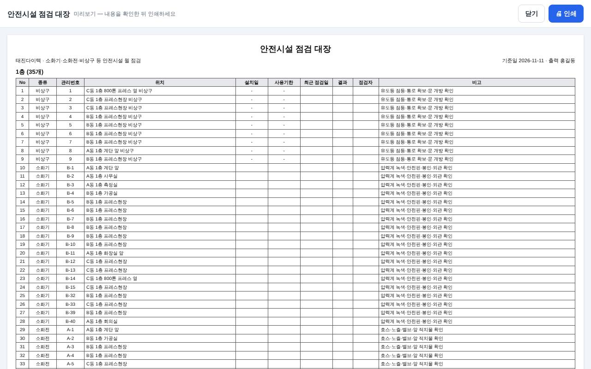
대피경로
- 🏃 대피경로 보기를 누르면 그려 둔 경로가 초록 화살표로 나옵니다.
- 경로를 그리려면 대피경로를 켠 상태에서 ✏ 경로 그리기를 누르고, 출발점부터 비상구까지 도면을 차례로 누른 뒤 완료·저장을 누릅니다. 층마다 한 번씩 그려 둡니다. 잘못 그린 경로는 「경로 지우기」로 지웁니다.
화재 대피 시뮬레이션
- 🔥 화재 대피 시뮬레이션을 누르고, 불이 난 곳을 도면에서 누릅니다.
- 이어서 내 위치를 누르면 그 자리에서 갈 비상구까지 파란 선으로 안내합니다.
- 🎲 랜덤 화재 시뮬레이션은 불 위치와 내 위치를 무작위로 정해 줍니다. 교육 때 쓰기 좋습니다.
- 빨간 원은 위험 반경입니다. 그 안의 비상구는 사용 금지(회색 X)로 표시됩니다.
- 파란 점들은 층 곳곳에서 가까운 안전 비상구로 움직이는 사람입니다. 경로는 도면의 벽을 피해 문과 통로로 갑니다.
- 가까운 소화기 · 소화전은 주황 테두리로 표시됩니다.
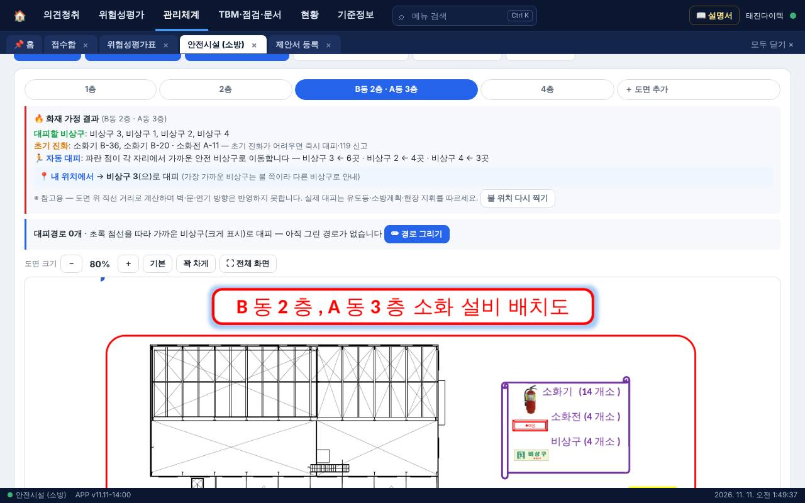
시뮬레이션은 도면 그림을 기준으로 계산한 교육용 참고 자료입니다. 도면에 닫힌 선으로 그려진 문은 벽으로 봅니다. 실제 대피는 현장 유도와 비상 방송을 따릅니다.
6. 관리체계
| 화면 | 하는 일 | 알아 둘 점 |
|---|---|---|
| 중처법 10대 요소 점검 | 중대재해처벌법 대응 10개 핵심 요소의 이행 여부를 다른 화면의 기록에서 자동으로 모아 보여 줍니다. 직접 입력하는 곳이 아니라, 해당 화면에 기록을 남기면 판정이 바뀝니다. | 「보완 필요」가 뜬 항목을 누르면 해당 화면으로 갑니다. 교육은 이번 반기 정기교육 시간 합계가 12시간 이상이어야 충족입니다(비상대응 훈련 시간은 빼고 계산). 아래 「반기 점검 확인」에서 작성 · 검토 · 안전보건관리책임자 · 경영책임자가 이름을 적고 서명하면, 그 시점의 판정 결과와 함께 저장됩니다. 지난 반기 점검표도 다시 열어 인쇄할 수 있습니다. |
| 방침 · 목표 | 안전보건 경영방침과 연간 목표를 등록합니다. | 📄 기본안 불러오기로 초안을 불러와 고칩니다. 게시용으로 출력할 수 있습니다. |
| 협의체 · 위원회 | 회의 안건 · 의결사항 · 참석자 · 후속조치를 기록합니다. | 위원회 대상이 아니면 노사 간담회로 갈음합니다. |
| 교육 · 훈련 | 교육 실시 기록과 참석 증빙을 남깁니다. | 교육일지 스캔본(PDF·사진)을 끌어다 놓으면 파일 이름의 날짜와 교육 종류를 읽어 기록을 만듭니다. 확인 후 저장합니다. |
| 보건관리 | 건강진단 · 작업환경측정 실시 현황과 사후관리. | 인원수만 기록합니다. 개인 건강정보와 실명은 넣지 않습니다. |
| 사고 · 아차사고 | 발생 보고 → 원인 조사 → 재발방지 대책 → 위험성평가(수시) 반영. |
각 화면은 ＋ 등록으로 추가하고, 연도 필터와 검색, ⬇ CSV 내려받기가 공통으로 있습니다.
7. TBM · 업무일지 · 허가서 · 문서함
TBM 일지
- ＋ TBM 작성: 회사 양식(작업 전 안전회의 일지) 그대로 작성합니다. 필수 확인사항, 건강상태, 전달사항, 참석자 서명을 넣습니다.
- 📷 종이 일지 사진으로 등록: 종이로 쓴 일지를 촬영해 올립니다. 날짜를 확인하는 창이 뜹니다. 이미 있는 날짜의 기록에는 목록에서 사진을 붙일 수 있습니다.
- 실시 관리대장 탭에서 날짜별 실시 여부를 보고 ⬇ 관리대장으로 내려받습니다.
관리감독자 업무일지
- ＋ 오늘 업무일지: 안전점검 → 아차사고·재해 → 시정지시 순서로 작성하고 전자서명으로 결재합니다.
- 하루에 점검을 두 번 기록할 수 있습니다. 이미 결재된 일지에 2회차를 넣으려면 「결재 취소 후 수정」을 누릅니다. 서명이 지워지고 다시 결재해야 합니다.
- 🗓 연차·부재 등록으로 부재일을 표시하고, ⚙ 체크리스트 설정으로 점검 항목을 바꿉니다.
작업계획서 · 작업허가서 (PTW)
- 작업계획서를 먼저 등록하고, 그 기간 안에 작업허가서(화기 · 밀폐공간 등)를 연결합니다.
- 결재선은 ⚙ 결재선 설정에서 정하고, 전자서명으로 결재합니다.
문서함
- 위험성평가서, 제안서 스캔, TBM 일지, 교육자료, 방침, 회의록, MSDS 등을 분류해서 올려 보관합니다.
- 문서 분류 · 문서 일자 · 제목을 넣고 📎 파일 선택 후 업로드를 누릅니다. 파일 하나에 25MB까지입니다.
- 제안 번호, 평가 번호와 연결해 두면 나중에 찾기 쉽습니다. 법정 보존기간(3~5년)에 맞춘 보관기한이 표시됩니다.
8. 현황 · 기준정보
| 화면 | 내용 |
|---|---|
| 통합 대시보드 | 방침 · 목표, 관리자 인원현황, 팀별 진행현황(TBM · 의견청취 · 개선조치 · 업무일지), TBM 진행률을 한 화면에 모았습니다. 조회 기간을 바꾸고 출력할 수 있습니다. |
| 대시보드 | 반기 단위 요약 보고서. 🖨 보고서 출력. |
| 법적 근거 · 절차 | 관련 법령 조문과 회사 운영절차(담당 · 기한 · 기록 · 점검 주기)를 정리한 화면입니다. 심사 대응 때 출력해 씁니다. |
| 접속 · 수정 기록 | 누가 언제 어느 기기에서 접속했고 무엇을 바꿨는지 남습니다. 기록은 고치거나 지울 수 없습니다. |
| 설정 | 부서 · 장소 · 위험 유형 목록 같은 기준정보, 관리자 인원, 알림 설정. 설정 저장을 누르면 모든 기기에 적용됩니다. |
백업 — 설정 화면의 ⬇ JSON 백업으로 전체 데이터를 파일로 받아 둘 수 있습니다. 한 달에 한 번 받아 두기를 권합니다. 전체 삭제와 샘플 데이터 넣기는 실제 운영 중에는 누르지 마세요.
9. 주기별 할 일
| 주기 | 할 일 | 화면 |
|---|---|---|
| 매일 | 작업 전 TBM 실시 · 기록 | TBM 일지 |
| 관리감독자 업무일지 작성 · 결재 | 관리감독자 업무일지 | |
| 접수된 제안 확인 | 접수함 | |
| 수시 | 현장 위험 발견 시 제안 등록 또는 알림 전파, 화기 · 밀폐공간 작업 전 허가서 | 제안서 등록 · 안전알림톡 · 작업허가서 |
| 매월 | 소화기 · 소화전 · 비상구 점검, 점검 대장 출력 | 안전시설 |
| 지연 · 임박 개선조치 확인 | 개선조치 관리 | |
| 데이터 백업 | 설정 | |
| 반기 | 중처법 10대 요소 점검 후 반기 점검 확인 서명(경영책임자까지), 정기교육 시간 확인 | 중처법 점검 · 교육·훈련 |
| 대시보드 보고서 출력 · 경영 보고 | 대시보드 | |
| 연 1회 | 정기 위험성평가 (부서별 엑셀 올리기 또는 엑셀 양식에서 수정) | 위험성평가표 |
| 방침 · 목표 수립과 게시 | 방침 · 목표 | |
| MSDS 최신본 확인 (공급업체 문의) | 화학물질 | |
| 변경 시 | 새 화학물질 입고 → MSDS 등록, 설비 · 공정 변경 → 수시 위험성평가, 소화기 교체 → 설치일 수정 | 화학물질 · 위험성평가표 · 안전시설 |
10. 문제가 생겼을 때
| 증상 | 해결 |
|---|---|
| 바뀐 기능이 안 보인다 | 화면 아래 상태줄의 버전을 확인하고 Ctrl+Shift+R로 새로고침합니다. 휴대폰은 화면을 아래로 당겨 새로고침하거나 앱을 닫았다 엽니다. |
| 오른쪽 위 점이 빨갛다 | 저장이 서버에 올라가지 못한 상태입니다. 인터넷 연결을 확인하고 점을 눌러 다시 동기화합니다. 입력한 내용은 그 기기에 남아 있습니다. |
| 다른 PC에서 내가 넣은 내용이 안 보인다 | 넣은 기기의 점이 초록인지 확인하고, 보는 쪽에서 점을 눌러 동기화합니다. |
| 파일이 안 올라간다 | 파일 올리기는 지정된 관리자만 됩니다. 파일 크기(25MB)도 확인하세요. |
| 포털에서 눌러도 창이 안 뜬다 | 브라우저의 팝업 차단을 해제합니다. 주소창 오른쪽의 팝업 차단 표시를 눌러 「항상 허용」을 고릅니다. |
| MSDS 자동 읽기 결과가 이상하다 | 스캔본 PDF는 틀릴 수 있습니다. 「자동 입력 결과 확인」에서 고치고 저장합니다. |
| 배치도의 위치나 번호가 현장과 다르다 | 표시를 눌러 관리번호 · 위치 설명을 고치거나 「위치 이동」으로 옮깁니다. 없는 시설은 상세 화면에서 삭제합니다. |
| 인쇄가 여러 장으로 나온다 | 제안서 양식과 TBM 일지는 A4 한 장에 맞춰져 있습니다. 여러 장이면 새로고침으로 최신 버전인지 확인하세요. 글이 아주 길거나 사진이 많으면 2장이 될 수 있습니다. 인쇄 창에서 배율을 「용지에 맞춤」으로 두면 됩니다. |
| 즐겨찾기가 다른 PC에서 안 보인다 | 즐겨찾기와 열린 탭은 그 PC에만 저장됩니다. 다른 PC에서는 다시 ☆를 눌러 추가합니다. |
| 근로자 화면이 한국어로만 나온다 | 화면 맨 위의 언어 버튼을 누릅니다. 버튼이 안 보이면 새로고침으로 최신 버전인지 확인하세요. 주소 끝이 ?m=w인지도 확인합니다. |
| 실수로 지웠다 | 「접속 · 수정 기록」에서 언제 무엇이 바뀌었는지 확인할 수 있습니다. 백업 파일이 있으면 관리자에게 복원을 요청합니다. |